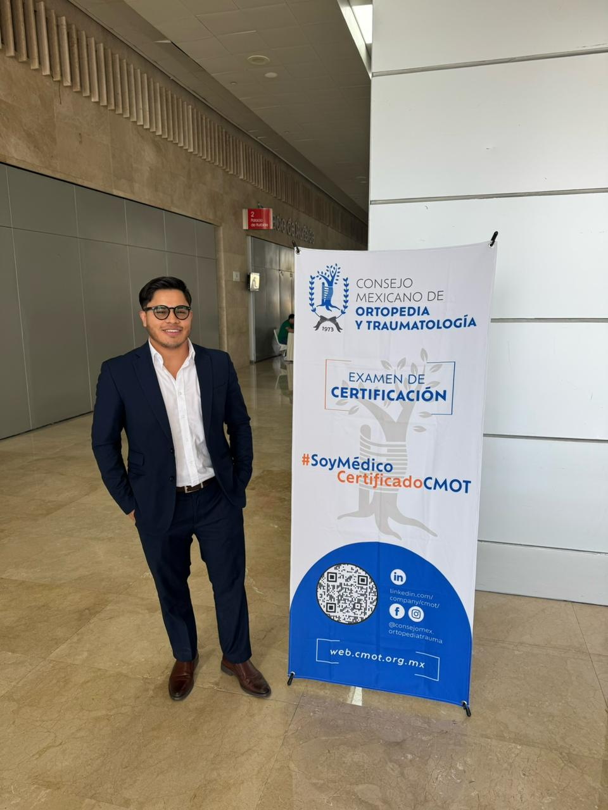

Licenciatura en Medicina
Universidad Popular Autónoma del Estado de Puebla (UPAEP)
Graduado con mención Honorífica.
2014 – 2020
Especialista en ortopedia y traumatología dedicado a restaurar la calidad de vida de sus pacientes a través de un buen diagnóstico y tratamiento personalizado.
Usas un Bloqueador de Anuncios? Abrir la agenda aquí.

Cédula Profesional: 12093737
Cédula especialista: 15555368
Trayectoria educativa diseñada para brindar una atención quirúrgica especializada y actualizada.
Universidad Popular Autónoma del Estado de Puebla (UPAEP)
Graduado con mención Honorífica.
2014 – 2020
Hospital UMAE "Magdalena de las SALINAS" UNAM
"El hospital más grande de latinoamerica de traumatología y de ortopedía"
2022 – 2026
Consejo Mexicano de Ortopedia y Traumatología
Nuestra métrica principal es el regreso exitoso del paciente a sus actividades cotidianas y deportivas.
Tecnología de vanguardia para diagnósticos precisos y recuperaciones aceleradas.
Tratamiento integral de lesiones ligamentarias, meniscales y reemplazos articulares totales o parciales.
Cirugía de reemplazo de cadera mediante abordajes de mínima invasión para una pronta deambulación.
Procedimientos endoscópicos que permiten visualizar y reparar articulaciones con incisiones milimétricas.
Tratamiento integral de lesiones ligamentarias, meniscales y reemplazos articulares totales o parciales.
Tratamiento integral de lesiones ligamentarias, meniscales y reemplazos articulares totales o parciales.
Soluciones quirúrgicas y conservadoras para el manejo efectivo de lesiones y dolor.
Ejemplo de casuística y resultados, usando imágenes de prueba.
Vea cómo nuestros pacientes han transformado sus vidas tras la intervención.

"Pensé que mi carrera como corredor había terminado. Gracias a la artroscopia del Dr. Meneses, volví a las pistas en tiempo récord."
Corredor Amateur, 42 años

"El reemplazo de cadera fue la mejor decisión. Ya no vivo con dolor y puedo disfrutar de mis nietos sin limitaciones."
Docente Jubilada, 68 años
Horario: 10:00 AM - 13:00 PM previo a cita
Fin de semana: 10:00 AM - 16:00 PM previo a cita
Beatriz Paredes Rangel 36, Tlaxcala
Democracia 162, Xicohtzinco
Calle de la Rivera 1, Tlaxcala
Santa María Acuitlapilco, Tlaxcala